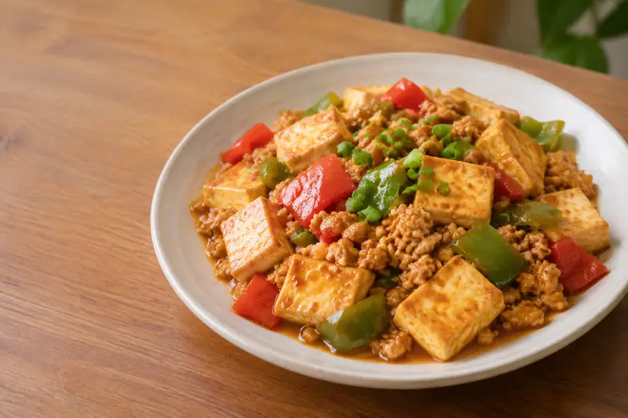

Main主菜 · Sichuan川
Home-style Tofu with Pork and Peppers家常豆腐
The tofu dish everyone orders at a Sichuan restaurant. Firm tofu slices are fried golden, then simmered with a little minced pork, peppers and doubanjiang until they soak up the sauce; it goes with rice better than meat does.川菜馆里人人点的家常豆腐：老豆腐切片煎到两面金黄，和一点肉末、青椒、郫县豆瓣一起烧，豆腐吸饱汤汁，比肉还下饭。

Ingredients食材
- Firm tofu老豆腐 450 g · 1 block firm tofu (about 450 g), cut into 1 cm triangles老豆腐 1 盒（约 450 克），切 1 厘米厚的三角片
- Ground pork猪肉馅 100 g · 100 g ground pork猪肉末 100 克
- Bell peppers彩椒 120 g · 1 bell pepper, cut into pieces1 个彩椒，切块
- Doubanjiang豆瓣酱 18 g · 1 tbsp doubanjiang (broad bean chilli paste), chopped郫县豆瓣酱 1 汤匙，剁碎
- Garlic大蒜 8 g · 3 cloves, sliced3 瓣，切片
- Ginger姜 5 g · 2 slices, minced2 片，切末
- Green onions大葱/小葱 15 g · 2 stalks, cut into lengths2 根，切段
- Soy sauce生抽 9 g · 1/2 tbsp1/2 汤匙
- Sugar白糖 4 g · 1 tsp1 茶匙
- Cornstarch玉米淀粉 4 g · 1 1/2 tsp, mixed with 2 tbsp water1 茶匙半，加 2 汤匙水调匀
- Canola oil菜籽油 35 g · 2 1/2 tbsp (about 38 mL)2.5 汤匙（约 38 mL）
Weights are as bought, before trimming or peeling. Costco pack sizes and availability vary; see each ingredient page.重量为买回来的原重（去皮去骨之前）。Costco 规格与有无随时变化，点食材名看详情。
Method做法
- Blot the tofu slices dry with paper towel.豆腐片用厨房纸吸干表面的水。
- Fry the tofu in 2 tbsp oil over medium heat until golden on both sides, about 6 minutes, and take it out.不粘锅放 2 汤匙油，中火把豆腐煎到两面金黄，约 6 分钟，盛出。
- Add the rest of the oil and stir-fry the pork until it changes colour.锅里补剩下的油，下肉末炒散到变色。
- Add the doubanjiang and fry on low until the oil turns red, about 1 minute.放豆瓣酱，小火炒到出红油，约 1 分钟。
- Add the ginger, garlic and white parts of the onion and stir until fragrant.放姜末、蒜片和葱白炒香。
- Pour in 150 mL hot water, the soy sauce and sugar, and bring to a boil.倒入 150 mL 热水、生抽和糖，煮开。
- Return the tofu and simmer on medium-low for 4 minutes so it absorbs the sauce.豆腐回锅，中小火烧 4 分钟让它吸收汤汁。
- Add the pepper and toss for 1 minute.放彩椒翻炒 1 分钟。
- Stir in the cornstarch slurry until the sauce coats the tofu, add the green parts of the onion and serve.淋入水淀粉，翻匀到汤汁裹住豆腐，撒葱绿出锅。
Keys to success成功要点
- Use firm tofu; soft tofu falls apart in the pan.老豆腐（firm）才煎得住，嫩豆腐一煎就碎。
- Fry the doubanjiang gently until the oil turns red for colour and flavour; high heat makes it bitter.豆瓣酱先小火炒出红油，辣香和颜色才出得来，火大容易焦苦。
- Doubanjiang is very salty; taste the sauce before adding any salt, usually none is needed.豆瓣酱本身很咸，先尝汤汁再决定加不加盐，一般不用再放。
Common problems常见失败与补救
- The tofu stuck and broke豆腐粘锅煎破
It was wet or turned too early; blot it dry and turn only when the crust lets it slide freely.豆腐没吸干或太早翻面；吸干后再下锅，等一面结壳能轻松推动时再翻。 - The tofu is bland豆腐不入味
Too little liquid or too short a simmer; the sauce should come halfway up the tofu, and simmer the full 4 minutes before thickening.汤汁太少或烧的时间太短；汤汁要没过豆腐一半，烧够 4 分钟再勾芡。
Watch it done视频参考
Titled as home-style tofu from a veteran banquet chef; five minutes, about 170,000 views.标题写明是国宴大师做家常豆腐，5 分钟，约 17 万次观看。
The English-language channel of Chef Wang showing home-style braised fried tofu; about six minutes.王刚国际频道的英文版家常豆腐，约 6 分钟，适合看英文的人。
Videos load only when you tap them (youtube-nocookie). Creators are credited; we do not host their videos.点了才加载视频（youtube-nocookie）。署名原作者，本站不托管视频。
Nutrition营养
| Energy热量 | 508 kcal |
| Protein蛋白质 | 28.8 g |
| Fat脂肪 | 39.4 g |
| of which saturated其中饱和脂肪 | 7 g |
| Carbohydrate碳水化合物 | 13.8 g |
| Fibre膳食纤维 | 1.8 g |
| Sodium钠 | 792 mg |
High sodium钠偏高 Sodium tiers: under 345 mg lower, 345-689 mg moderate, 690 mg and above high (this site's tiers; 15% of the 2,300 mg daily reference = 345 mg).钠分档：低于 345 mg 较低，345–689 mg 中等，690 mg 及以上偏高（本站分档；345 mg ＝ 每日参考 2300 mg 的 15%）。
Computed from the Canadian Nutrient File (Health Canada) with the weights above; oil and sauces are counted in full. Real dishes differ.按加拿大营养素数据库和上面的重量计算；油和酱汁按全量计入，实际会略低。
Good to know适合 / 需注意
- About 28.8 g protein per serving, a protein-rich meal (adult reference intake roughly 50-60 g/day; needs vary).每份蛋白质约 28.8 g，属于蛋白质较高的一餐（成人每日参考量约 50–60 g，个体差异大）。
- About 792 mg sodium per serving (about 34% of the 2,300 mg daily reference), on the high side; use less soy sauce or salt, and pair with unsalted sides.每份钠约 792 mg（约占每日参考 2300 mg 的 34%），偏高；少放酱油或盐，或搭配无盐主食与蔬菜。
- About 7 g saturated fat per serving (daily reference about 20 g), on the high side; use a leaner cut or remove skin.每份饱和脂肪约 7 g（每日参考约 20 g），偏高；可换瘦肉部位或去皮。
- Contains chilli; reduce or leave it out for children and anyone who avoids heat.含辣，不吃辣的人和小朋友可减量或不放。
- Contains allergens: Soy, Wheat / gluten.含过敏原：大豆、小麦/麸质。
Tofu supplies plant protein and only a little pork is used for flavour; the doubanjiang is the main source of sodium, so adjust it to taste.豆腐提供植物蛋白，只用少量肉末提味；豆瓣酱是主要的钠来源，口重口淡可以增减。